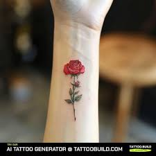

|  |
Rose tattoos have always held a special place in the world of body art and symbolism. The rose, with its captivating beauty and enchanting fragrance, has long been associated with love and passion. When it comes to tattoos, the symbolism of a rose goes beyond its physical attributes. Roses are often seen as a representation of inner beauty, emotions, and the complexities of human nature. |

|
I love cats and have four of them at home. They bring me so much relaxation when I'm feeling stressed. They’re easy to care for and so fluffy that snuggling with them is a delight. They may act like little bosses, but to me, they’re the lucky stars of my life. |